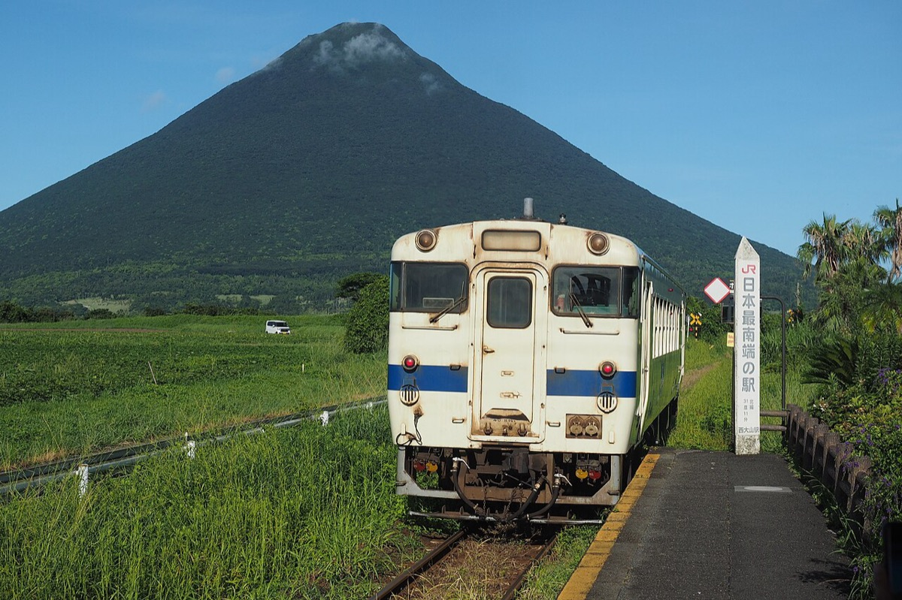

KAGOSHIMA · 2026 가을
연기 나는 섬을 마주 보고,
모래 속 온천까지
가고시마 시내 → 사쿠라지마 → 이부스키 · 3박 4일 · 11/15(일) – 11/18(수)
친구와 · 2인 · 일정 초안
Day 1 · 화산 앞의 번화가
11월 15일 (일)점심 비행기로 내려와 버스로 시내까지. 짐을 풀고 덴몬칸에서 시로쿠마, 저녁은 흑돼지와 고구마 소주.
FLIGHT
제주항공 7C182312:40 출발 · 14:15 도착 · 예약 완료 ✓
STAY
덴몬칸 근처 숙소3박 · 미정
오늘의 미션
시로쿠마 빙수1947년 덴몬칸 무자키에서 시작
공항 → 시내
타임라인
| 시간 | 일정 | 메모 |
|---|---|---|
| 10:40 | 인천공항 도착 | 제1터미널 제주항공 카운터. |
| 12:40 | 인천 → 가고시마 ✈ 1시간 35분 예약 완료 ✓ | 7C1823. |
| 14:15 | 입국 수속 | |
| 15:00 | 공항 리무진 → 가고시마추오역 약 40분 | 1,400~1,500엔. 현금이나 지역 IC카드(Rapica)만 된다. |
| 15:40 | 시전차로 덴몬칸, 체크인 10분 | |
| 17:00 | 덴몬칸 무자키 시로쿠마 오늘의 미션 | 연유 빙수 위에 과일로 흰곰 얼굴을 낸다. 한 그릇이 크니 둘이 하나로도 충분. |
| 19:00 | 흑돼지 샤부샤부 식사 | 덴몬칸 일대에 전문점이 몰려 있다. 주말 저녁은 예약 권장. |
| 21:00 | 고구마 소주 이자카야 밤 | 가고시마는 이모조추(고구마 소주)의 본고장. 오유와리(뜨거운 물에 타기)로. |
DAY 1 체크포인트
- 공항 버스는 Suica가 안 됩니다. 현금 또는 가고시마 지역 IC카드만 받으니 엔화 동전을 조금 챙기세요.
- 시로쿠마는 빙수지만 11월에도 줄이 섭니다. 저녁 식사 전 애매한 시간에 가는 게 덜 기다립니다.
- 11월 중순 가고시마는 낮 20도 안팎, 밤 12도 정도입니다. 얇은 겉옷 하나면 됩니다.
Day 2 · 바다 건너 활화산
11월 16일 (월)아침 페리로 사쿠라지마에 건너가 섬을 돌고, 오후에는 센간엔. 해 질 무렵 시로야마에서 섬을 다시 본다.
MOVE
사쿠라지마 페리15분 · 24시간 운항 · 후불
오늘의 미션
유노히라 전망소분화구에 가장 가까운 전망대
VIEW
시로야마 전망대11월 일몰 17시 20분 전후
시내 → 사쿠라지마 → 센간엔
타임라인
| 시간 | 일정 | 메모 |
|---|---|---|
| 08:00 | 가고시마항 페리 터미널 시전차 | 24시간 운항이라 시간 맞출 필요가 없다. 요금은 사쿠라지마 쪽에서 내리면서 낸다. |
| 08:30 | 사쿠라지마 페리 15분 | 선내 우동이 명물. 15분 안에 다 먹어야 한다. |
| 09:00 | 사쿠라지마 아일랜드 뷰 버스 순환 | 섬 서쪽 주요 지점을 도는 관광 버스. |
| 09:30 | 유노히라 전망소 오늘의 미션 | 일반인이 갈 수 있는 가장 높은 곳. 분화구 쪽 산 표면이 그대로 보인다. |
| 11:00 | 다이쇼 용암 지대 산책로 명소 | 1914년 분화로 흘러내린 용암이 굳은 들판. |
| 11:30 | 나기사 공원 족탕 여유 | 바다를 보며 발을 담그는 100m 길이 족탕. 수건 챙기기. |
| 12:30 | 페리로 복귀, 점심 식사 | 항구 근처에서. |
| 14:00 | 센간엔과 쇼코슈세이칸 오늘의 미션 | 09:00~17:00. 사쿠라지마를 정원의 일부로 끌어들인 차경 정원. |
| 16:50 | 시로야마 전망대 야경 | 해 지는 사쿠라지마. 시티 뷰 버스로 올라간다. |
| 저녁 | 덴몬칸에서 저녁 식사 |
DAY 2 체크포인트
- 사쿠라지마는 오전에 가세요. 오후로 갈수록 바람 방향에 따라 화산재가 날리는 날이 있습니다. 아침 공기가 깨끗할 때 산이 가장 잘 보입니다.
- CUTE 패스를 사면 계산이 편합니다. 페리, 시전차, 시내 버스, 관광 버스를 하루 동안 같이 쓸 수 있습니다.
- 화산재 예보를 확인하세요. 가고시마 지역 일기예보에는 사쿠라지마 강회 예보가 따로 나옵니다. 렌즈 쓰는 사람은 안경을 챙기는 게 낫습니다.
Day 3 · 모래 속 온천
11월 17일 (화)관광 열차를 타고 반도 끝 이부스키로. 바닷가 모래에 파묻혀 땀을 빼고, 돌아와 마지막 밤은 야타이무라.
MOVE
이부스키노 다마테바코가고시마추오 ↔ 이부스키 약 50분 · 전석 지정
오늘의 미션
모래찜질유카타 입고 10분이면 땀이 난다
EAT
가고시마 야타이무라가고시마추오역 앞 포장마차 거리
시내 → 이부스키
타임라인
| 시간 | 일정 | 메모 |
|---|---|---|
| 오전 | 이부스키노 다마테바코 약 50분 | 하루 3왕복, 전석 지정. JR큐슈 예약 사이트에서 미리 잡는다. 바다 쪽 좌석이 좋다. |
| 오전 | 모래찜질 회관 사라쿠 오늘의 미션 | 유카타로 갈아입고 해변 모래에 눕는다. 10분 남짓이면 땀이 비 오듯 난다. 끝나면 온천 대욕탕. |
| 점심 | 이부스키에서 점심 식사 | 흑돼지 돈카츠나 가쓰오 요리. |
| 오후 | 가이몬다케 조망 선택 | 사쓰마 후지. 시간이 되면 JR 니시오야마역(일본 최남단 JR역)에서 본다. |
| 오후 | 가고시마로 복귀 약 50분 | 돌아오는 다마테바코 시간에 맞춘다. |
| 저녁 | 가고시마 야타이무라 식사 | 가고시마추오역 근처 포장마차 25곳 남짓. 가게를 옮겨 다니며 마시는 곳. |
DAY 3 체크포인트
- 다마테바코는 꼭 예약하세요. 하루 세 번밖에 안 다니고 전석 지정이라 당일엔 표가 없을 때가 많습니다. 못 타면 보통 열차로 1시간 넘게 걸립니다.
- 모래찜질은 공복보다 가볍게 먹고 하는 게 낫습니다. 생각보다 땀이 많이 나서 물을 꼭 챙기세요.
- 이부스키는 반나절이면 충분합니다. 점심까지 먹고 오후 열차로 돌아오면 마지막 밤을 시내에서 여유 있게 보냅니다.
Day 4 · 선물 사서 공항으로
11월 18일 (수)늦게 일어나 덴몬칸에서 선물을 사고, 점심 지나 공항 버스. 오후 비행기로 돌아온다.
FLIGHT
제주항공 7C182415:15 출발 · 17:05 도착 · 예약 완료 ✓
BUY
가고시마 선물가루칸, 사쓰마아게, 고구마 소주
MOVE
공항 리무진가고시마추오에서 약 40분
시내 → 공항
타임라인
| 시간 | 일정 | 메모 |
|---|---|---|
| 오전 | 체크아웃 | |
| 오전 | 덴몬칸 선물 쇼핑 쇼핑 | 가루칸(마로 만든 찐 과자), 사쓰마아게(어묵 튀김), 고구마 소주. |
| 12:30 | 가고시마추오역 → 공항 약 40분 | 공항 리무진. |
| 15:15 | 가고시마 → 인천 ✈ 1시간 50분 예약 완료 ✓ | 7C1824. 17:05 인천 도착. |
DAY 4 체크포인트
- 소주는 위탁 수하물로 보내세요. 액체라 기내 반입이 안 되고, 면세 한도도 확인해야 합니다.
- 사쓰마아게는 냉장 보관이 필요합니다. 진공 포장된 것을 고르면 들고 오기 편합니다.
- 오후 비행기라 오전이 넉넉합니다. 공항 리무진 시각만 정해두면 됩니다.
전체 컨셉
친구와 둘이 3박 4일. 시내 덴몬칸 근처에 한 번만 짐을 풀고, 바다 건너 사쿠라지마와 반도 끝 이부스키를 하루씩 다녀오는 구조다. 숙소를 옮기지 않으니 매일 아침 가볍게 나간다.
이 일정의 뼈대
- 숙소는 덴몬칸 한 곳공항 버스, 시전차, 페리 터미널이 모두 덴몬칸에서 10분 안쪽이다. 밤에 마시고 걸어 들어올 수 있는 것도 친구 여행에서는 중요하다.
- 사쿠라지마는 오전화산재는 바람을 타고 오후에 시내로 넘어오는 날이 많다. 섬은 아침에 다녀오고, 오후에는 센간엔에서 그 섬을 정원 너머로 본다.
- 이부스키는 열차 시간이 기준관광 열차가 하루 세 번이라 그 시간표가 하루를 정한다. 예약을 먼저 잡고 나머지를 붙인다.
- 비행기 시간이 하루를 자른다가는 편이 오후 2시 15분 도착, 오는 편이 오후 3시 15분 출발이다. 첫날과 마지막 날은 반나절씩이라, 큰 일정은 가운데 이틀에 몰았다.
가고시마 鹿児島
사쓰마 번의 수도

가고시마는 에도 시대 내내 사쓰마 번을 다스린 시마즈 가문의 성하 마을이었다. 막부 말기 이곳 출신들이 메이지 유신을 이끌었고, 그 마지막 장면인 세이난 전쟁도 이 도시 한가운데 언덕에서 끝났다.
알고 가면 보이는 것
- 덴몬칸은 천문대 이름번화가 이름 덴몬칸(天文館)은 18세기 후반 번주 시마즈 시게히데가 세운 천문·역법 연구소 메이지칸의 별칭에서 왔다. 여기서 만든 달력으로 농사 때를 맞췄다. 지금은 아케이드 한쪽에 비석만 남았다.
- 시로야마는 사이고의 마지막 언덕1877년 세이난 전쟁에서 정부군에 밀린 사이고 다카모리가 마지막 닷새를 버틴 곳이 시로야마다. 9월 24일 총상을 입고 생을 마쳤고, 일본의 마지막 내전도 그날 끝났다. 언덕 중턱에 그가 머문 동굴이 남아 있다.
- 센간엔은 화산을 빌린 정원1658년 시마즈 가문의 별저로 지은 정원이다. 사쿠라지마를 인공 산처럼, 긴코만을 연못처럼 끌어들인 차경 정원이라 정원 담장 너머 풍경까지가 작품이다. 옆의 쇼코슈세이칸은 막부 말기 서양식 공장 자리로, 메이지 산업혁명 유산에 포함됐다.
- 시로쿠마는 1947년연유를 끼얹은 빙수 위에 과일과 팥을 올려 흰곰 얼굴처럼 보이게 한 것이다. 덴몬칸의 무자키 창업자가 1947년에 고안했다고 전해진다.
- 흑돼지와 고구마가고시마 흑돼지는 류큐를 거쳐 들어온 돼지가 뿌리라는 설이 유력하다. 고구마도 류큐를 거쳐 들어와 화산재 땅에서 잘 자랐고, 그 고구마로 빚은 것이 이모조추다. 고구마를 사쓰마이모(사쓰마 감자)라 부르는 이유다.
현장 메모
- 공항 버스는 Suica 불가현금이나 지역 IC카드(Rapica)만 받는다.
- 시전차 궤도는 잔디도심 구간 선로가 잔디로 덮여 있다. 열섬 대책으로 깔았는데 지금은 도시의 얼굴이 됐다.
- 시로야마는 해 질 녘사쿠라지마 뒤로 해가 지는 게 아니라, 저녁 빛을 받은 섬이 정면에서 붉어진다.
사쿠라지마 桜島
섬이었던 화산

사쿠라지마는 이름에 섬(島)이 붙어 있지만 지금은 섬이 아니다. 1914년 다이쇼 대분화 때 흘러나온 용암이 바다를 메워 동쪽 오스미반도와 이어 붙었다. 20세기 일본에서 가장 큰 분화였다.
알고 가면 보이는 것
- 1914년 1월 12일섬 양쪽 허리의 균열에서 동시에 분화가 시작됐고, 폭발 뒤 용암이 몇 달 동안 흘러내렸다. 그 용암이 섬과 반도 사이 해협을 메웠다. 섬 남동쪽의 다이쇼 용암 지대가 그때 굳은 땅이다.
- 지금도 하루에도 몇 번씩미나미다케 화구는 지금도 수시로 연기를 뿜는다. 시내 일기예보에 강회 예보, 그러니까 화산재가 어느 쪽으로 떨어질지가 따로 나오는 도시는 드물다.
- 페리는 24시간 다닌다시가 운영하는 공영 페리가 15분 만에 건너간다. 섬 주민에게는 출퇴근 버스 같은 존재라 밤에도 끊기지 않는다. 선내 우동은 15분 안에 먹어야 하는 명물이다.
- 화산재를 버리는 노란 봉투섬과 시내 곳곳에 화산재 전용 수거 장소가 있고, 노란 강회 봉투에 담아 내놓는다. 화산과 같이 사는 생활이 길가에 보인다.
현장 메모
- 요금은 내리면서가고시마항에서 탈 때가 아니라 사쿠라지마항에서 내릴 때 낸다.
- 오전에 갈 것오후에는 바람 방향에 따라 재가 날린다.
- 족탕에 수건나기사 공원 족탕은 바다를 보며 앉는 100m 길이다.
이부스키 指宿
모래가 데우는 온천

사쓰마반도 남쪽 끝 이부스키는 바닷가 모래 아래로 온천수가 흐르는 곳이다. 해변 모래 자체가 따뜻해서, 그 모래에 몸을 묻는 모래찜질이 이곳의 목욕법이 됐다.
알고 가면 보이는 것
- 모래찜질의 원리땅속에서 솟은 온천수가 해변 모래층을 데운다. 유카타를 입고 누우면 직원이 삽으로 모래를 덮어 주고, 10분 남짓이면 온몸에서 땀이 난다. 모래의 무게와 열이 함께 몸을 누른다.
- 다마테바코는 우라시마 전설이부스키에는 거북을 구한 어부 우라시마 타로가 용궁에 다녀왔다는 전설이 전한다. 용궁에서 받아 온 보물 상자가 다마테바코고, 열면 연기가 나며 늙어 버린다. 열차 문이 열릴 때 수증기가 뿜어 나오는 건 그 장면을 흉내 낸 것이다.
- 반은 희고 반은 검은 열차바다 쪽은 하얗게, 산 쪽은 검게 칠했다. 상자를 열어 머리가 하얗게 센 우라시마의 모습을 따왔다고 한다.
- 가이몬다케는 사쓰마 후지바닷가에 홀로 솟은 원뿔형 화산이라 사쓰마의 후지산이라 불린다. 근처 니시오야마역은 일본 최남단 JR역이다.
현장 메모
- 열차부터 예약하루 세 왕복, 전석 지정이다.
- 물 챙기기모래찜질은 생각보다 땀이 많이 난다.
- 반나절이면 충분점심까지 먹고 오후 열차로 돌아오면 마지막 밤을 시내에서 보낸다.